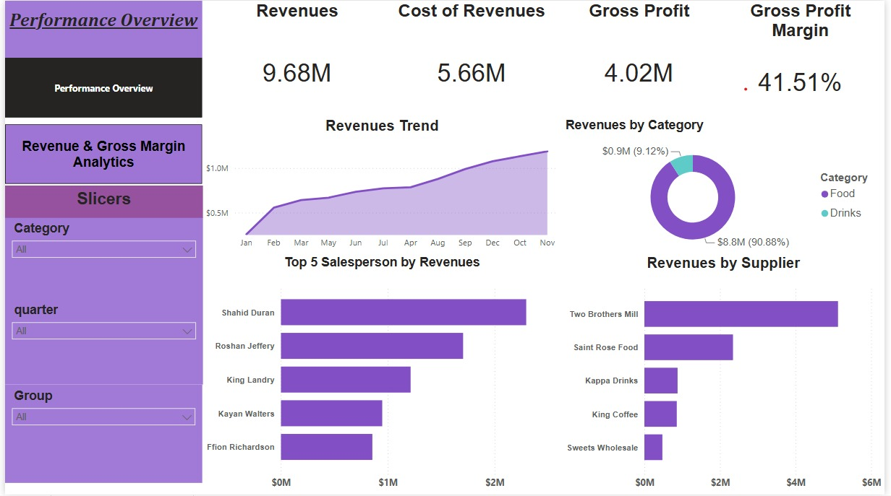
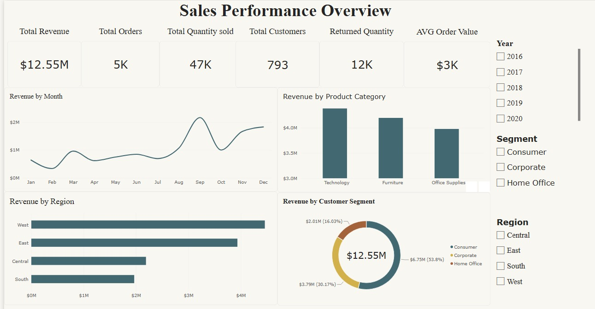

Hello, I'm
Turning data into clear, actionable insights for better business decisions.
About Me
I’m Hazem Taha Hosny, a Data Analyst with a background in Accounting and Finance. I help businesses turn their data into clear insights that support better decisions and improve performance.
I work with Excel, SQL, Power BI, and Python to clean, analyze, and visualize data, while using my finance and accounting background to understand the business side behind the numbers.
What sets me apart is my sense of ownership. I don’t just complete a task—I treat every project as if it were my own, paying attention to the details, understanding the problem, and looking for practical solutions that deliver real value.
I’m naturally curious, problem-solving oriented, and always looking for opportunities to learn and improve. My goal is to make data easier to understand and more useful for the people who rely on it to make decisions.
Education
Faculty of Commerce – English Section
Major: Accounting
Expected Graduation: May 2027
Grade: Excellent
Skills
Experience
Professional Data Analyst Track
Banking Intern
Intern
Services
I clean, transform, and organize raw data to make it accurate, consistent, and ready for analysis.
I analyze business data to identify trends, patterns, and key insights, then present the findings in clear and meaningful reports.
I build interactive Power BI dashboards using data modeling, DAX, and data visualization to help businesses monitor performance and make informed decisions.
I use advanced Excel techniques to analyze data, create meaningful reports, and build interactive dashboards that make business performance easier to understand.
Projects

An interactive Power BI solution designed to evaluate financial performance, analyze revenue and profitability trends, and support data-driven decision-making.

An interactive Power BI solution designed to analyze sales performance, sales representative productivity, product and customer trends, and returns.